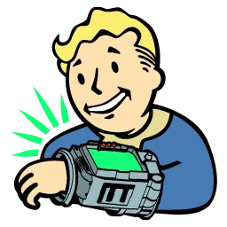

 Fallout
Details
 |
|
| Playtime | Not Played |
| Last Activity | Never |
| Added | 5/2/2025 21:11:26 |
| Modified | 5/7/2025 5:11:50 |
| Completion Status | Not Played |
| Library | Playnite |
| Source | Steam |
| Platform | $PC (Windows) |
| Release Date | 10/10/1997 |
| Community Score | 95 |
| Critic Score | 89 |
| User Score | |
| Genre | RPG |
| Developer | Interplay Entertainment The Omni Group |
| Publisher | Bethesda Softworks Interplay Entertainment MacPlay Sold Out Software |
| Feature | Single Player |
| Links | PCGamingWiki Official site GOG Database HowLongToBeat IGDB SteamDB StrategyWiki MobyGames Wikipedia WSGF |
| Tag | 1990's 2D Action Action RPG Adventure Atmospheric Character Customization Classic CRPG Difficult Exploration First-Person FPS Isometric Moddable Multiple Endings Open World Post-apocalyptic Retro RPG Sandbox Sci-fi Shooter Singleplayer Story Rich Survival Tactical Third Person Turn-Based Turn-Based Combat Western |
Description
Fallout (also known as Fallout: A Post Nuclear Role Playing Game) is a 1997 role-playing video game developed and published by Interplay Productions, set in a mid-22nd century post-apocalyptic and retro-futuristic world, decades after a global nuclear war lead by the United States and China. Fallout's protagonist, the Vault Dweller, inhabits an underground nuclear shelter. The player must scour the surrounding wasteland for a computer chip that can fix the Vault's failed water supply system. They interact with other survivors, some of whom give them quests, and engage in turn-based combat.
Tim Cain began working on Fallout in 1994. It began and was conceptualized as based on the role-playing game GURPS, but after Steve Jackson Games objected to Fallout's violence, Cain and designer Christopher Taylor created a new character customization scheme, SPECIAL. Interplay initially gave the game little attention, but eventually spent $3 million and employed up to thirty people to develop it. Interplay considered Fallout the spiritual successor to its 1988 role-playing game Wasteland and drew artistic inspiration from 1950s literature and media emblematic of the Atomic Age as well as the films Mad Max and A Boy and His Dog. The quests were intentionally made morally ambiguous. After three and a half years of development, Fallout was released in North America in October 1997.
Fallout received acclaim for its open-ended gameplay, character system, plot, and setting. It won "Role-Playing Game of the Year" from GameSpot and Computer Games Magazine and was nominated by the Academy of Interactive Arts & Sciences at the Spotlight Awards. Fallout was a commercial success, selling more than half a million copies worldwide. Often listed among the greatest video games of all time, Fallout has been credited for renewing consumer interest in the role-playing video game genre. It spawned the widely successful Fallout series, the rights to which were purchased in 2007 by Bethesda Softworks.
Gameplay
Character creation
Fallout is a role-playing video game. The player begins by selecting one of three characters, or one with player-customized attributes. The protagonist, known as the Vault Dweller, has seven primary statistics that the player can set: strength, perception, endurance, charisma, intelligence, agility, and luck. Each statistic may range from one to ten, provided their sum does not exceed 40. Two other statistics set during character creation are skills and traits. All 18 skills are learned abilities, their effectiveness determined by a percentage value. Their initial effectivenesses are determined by the primary statistics, but three can be tagged and given a 20% boost. Traits are character qualities with both a positive and negative effect; the player can pick up to two from a list of sixteen. During gameplay, the player can gather experience points through various actions. For gathering experience points, the player will level up and may increase their skills by a set number of points. Every three (or four with the Skilled trait) levels, the player can grant themself a special ability, known as perks. There are 48 perks (plus two extra perks which can only be obtained by wearing certain types of armor) and each has prerequisites that must be met. For example, "Animal Friend", which prevents animals from attacking the player character, requires the player to be level nine, have an intelligence of five, and have an outdoorsman skill of 25%.
In Fallout, the player explores the game world from a trimetric perspective and interacts with non-player characters (NPCs). Characters vary in their amount of dialogue; some say short messages, while others speak at length. Significant characters are illustrated with 3D models, known as "talking heads", during conversations. The player can barter with other characters or buy goods using bottle caps as currency. The game has companions that the player can recruit for exploration and combat, although they cannot be directly controlled.
There are three main quests where completion is required, two of them given after completion of the first one. The first main quest has a time limit of 150 in-game days; the game ends if the player fails to complete it within the allotted time. Some characters give the player side quests; if the player solves them, they receive experience points and occasionally a reward in the form of money and/or goods. The player can utilize the PIP-Boy 2000, a portable wearable computer that tracks these quests. Many quests feature multiple solutions; they can often be completed through diplomacy, combat, or stealth, and some allow solutions that are unconventional or contrary to the original task. Based on how they completed quests, the player can earn or lose reputation points, which determine how others treat them. The player's actions dictate what future story or gameplay opportunities are available and the ending.
Combat is turn based and uses an action-point system, the number of action points that are available depending on certain perks and the player's allocation in the agility statistic. During each turn, multiple actions may be performed by the player until they run out of action points. Different actions such as attacking, moving, reloading, interacting with objects mid-combat, and accessing the inventory consume different amounts of points. The player can rapidly switch between two equipped weapons, and may acquire a diverse range of weapons, many of which can target specific areas of enemies. Melee (hand-to-hand) weapons typically have two attacks: swing or thrust. If the player has equipped no weapon, they can punch or kick.
Plot
Setting
On October 23, 2077, a worldwide nuclear war between the United States and China following a global conflict caused by resource shortages devastated the world and destroyed modern civilization. The events of Fallout take place nearly a century later in 2161, and follow the Vault Dweller, a human born and raised within Vault 13, one of a number of high-tech underground fallout shelters built to protect survivors. Those on the surface live off the salvage of the old world.
Vault 13 is located beneath the mountains of Southern California. The Vault Dweller can explore major settlements including Junktown, which is mired in conflict between local sheriff Killian Darkwater (Richard Dean Anderson) and criminal Gizmo (Jim Cummings); the Hub, a bustling merchant city with job opportunities; and Necropolis, a city founded by Ghouls, humans mutated by radiation, who are revealed to be the former inhabitants of Vault 12. The Vault Dweller's journey also brings them into contact with various factions, including the Brotherhood of Steel, a quasi-religious military order devoted to finding and restoring pre-war technology, the Children of the Cathedral, an optimistic religious cult; and the Super Mutants, an army of virtually immortal humanoids immune to radiation.
The player controls the Vault Dweller, who is sent into the Wasteland to save their vault. The Vault Dweller can be customized or based on one of three pre-generated characters: Albert Cole, a negotiator and charismatic leader with a legal background; Natalia Dubrovhsky, a talented acrobat and the intelligent and resourceful granddaughter of a Russian diplomat in the pre-War Soviet consulate in Los Angeles; and Max Stone, the largest person in the Vault who is known for his strength, stamina, and lack of intelligence. The three characters present a diplomatic, deceptive, or combative approach to the game, respectively. Although the character can be male or female, the Vault Dweller is canonically male.
The four companions the player can recruit are: Ian, a mercenary guard from Shady Sands; Tycho, a desert ranger; Dogmeat, a tireless loyal dog; and Katja, a member of an organization called the Followers of the Apocalypse. Other major characters include Vault Boy, the mascot of Vault-Tec, the creators of the Vaults; Killian Darkwater, the mayor, sheriff, and shopkeeper of Junktown; and the Master (Cummings and Kath Soucie), leader of the Super Mutants and the main antagonist.
In Vault 13, the Water Chip, a computer component responsible for the Vault's water recycling and pumping machinery, stops working. With only 150 days before water reserves will run dry, the Vault Overseer (Ken Mars) tasks the Vault Dweller with finding a replacement. Armed with the PIPBoy 2000 and meager equipment, the Vault Dweller leaves Vault 13 for the nearest source of possible help, Vault 15, but finds it abandoned and in ruins. The Vault Dweller then explores the wasteland and locates a replacement chip in the destroyed Vault 12, underneath Necropolis.
The Vault Dweller returns to Vault 13 with the chip and the water system is repaired. However, the Overseer becomes concerned about the mutants reported by the Vault Dweller. Believing the mutations are too widespread and extreme to be a natural occurrence, the Overseer assigns the Vault Dweller a new task: finding and stopping the source of the mutations. Information discovered throughout the wasteland reveals that humans are being captured and turned into Super Mutants by exposure to the Forced Evolutionary Virus (F.E.V.). The Super Mutants are led by the Master, who intends to transform every human into a Super Mutant and establish "unity" on Earth. The Children of the Cathedral are a front created by the Master, who is using them to trick humans into peaceful submission.
To stop the mutations, the Vault Dweller must destroy the vats containing the F.E.V. and kill the Master; the order of the tasks is chosen by the player. The Vault Dweller travels to the Mariposa Military Base to destroy it and the vats within, preventing the creation of more Super Mutants. To kill the Master, the Vault Dweller travels to the Children's Cathedral and locates a prototype Vault beneath it, from which the Master commands his army. The Vault Dweller infiltrates the Vault and can choose to convince the Master that his plan will fail because the Super Mutants are infertile, kill him immediately, or set off an explosion that destroys the Cathedral. The Vault Dweller returns to Vault 13 but is denied entry by the Overseer, who fears that they have been changed by their experiences and the tales of their exploits and accomplishments will encourage the inhabitants to abandon the Vault. As such, the Overseer exiles the Vault Dweller into the wasteland. Fallout concludes with the legacy of the Vault Dweller's decisions on the societies and people they had encountered.
Additionally, there is an alternate ending if the player chooses to join the master. This ending has the player character dunked into the F.E.V. and made into a super mutant, who then returns to Vault 13 with the master’s army and massacres its inhabitants as witnessed on security footage.
Development
Development on Fallout began in early 1994. Initially, Interplay gave the game little attention, and for the first six months, the programmer Tim Cain was the sole developer. Cain eventually enlisted the aid of Interplay employees during their spare time. The development team—led by Cain, the designer Christopher Taylor, and the art director Leonard Boyarsky—reached 15 people in 1995. In 1996, the producer Feargus Urquhart recruited some Interplay workers, expanding the team to 30. Cain considered the team "amazing" for their dedication, while Urquhart described working under Interplay as "barely controlled chaos".
The tentative title, Vault-13: A GURPS Post-Nuclear Role-Playing Game, was rejected as unfitting. Armageddon was considered as an alternative, but was already in use for another Interplay project (which was later canceled). Interplay's president Brian Fargo suggested the title Fallout. Interplay intended to use "I Don't Want to Set the World on Fire" by the Ink Spots as the theme song, but was hindered by a copyright problem, so used another Ink Spots song, "Maybe". The development concluded on October 1, 1997, after three and a half years and a total cost of approximately $3 million (~$5.29 million in 2023).
Engine and design
Fallout started as a game engine that Cain was developing during his spare time, based on the tabletop role-playing game Generic Universal RolePlaying System (GURPS). It entered more coordinated development after Cain convinced Fargo of its potential, and Interplay announced it had acquired the GURPS license in 1994. The first Fallout prototype was finished that year.
The team considered making the game first-person and 3D, but discarded the idea because the models would not have held the desired amount of detail. They instead selected an oblique projection, producing a trimetric perspective. Designed to be open-world and non-linear, Fallout was balanced so that, even though side quests are optional, characters who do not improve their skills and experience through them would be too ill-equipped to finish. However, Taylor also added the 150-day time limit to the game to keep the player focused on the main quests.
The game was nearly canceled in late 1994 after Interplay acquired the licenses to the Dungeons & Dragons franchises Forgotten Realms and Planescape, but Cain convinced Interplay to let him finish. After the success of the role-playing video game Diablo, released in January 1997, Cain resisted pressure to convert Fallout into a real-time multiplayer game. In March 1997, Interplay dropped the license for GURPS due to creative differences with GURPS's creator Steve Jackson Games. According to Interplay, Steve Jackson objected to the amount of violence and gore. Interplay was forced to change the GURPS system to the internally-developed SPECIAL system; Taylor and Cain were each given a week to design and code it, respectively.
Prior to the license's termination, the engine for Fallout was based on GURPS. Fantasy and time-traveling settings were considered before the development team decided on a post-apocalyptic setting. Taylor outlined the design goals in a vision statement, which Cain called an inspiration for the development team and "a major reason why the game came together at all."
Fallout was a spiritual successor to Interplay's role-playing video game Wasteland (1988), published by Electronic Arts. Almost everyone who worked on Fallout had played it. The team was unable to make Fallout a direct sequel to Wasteland because Electronic Arts refused to license it. The team drew inspiration for Fallout's retro-futuristic art style from 1950s literature and media related to the Atomic Age. Examples included the films Forbidden Planet (1956), A Boy and His Dog (1975), and Mad Max (1979). Influence was also drawn from the optimistic Cold War posters, which Boyarsky reportedly loved.
The vaults were influenced by the underground base in A Boy and His Dog. Cain said that the team "all loved X-COM" and that Fallout featured combat similar to X-COM's prior to the GURPS license. Cain admired Star Control II (1992) and said it influenced Fallout's open-ended design. Fallout features many popular culture references. The team was only allowed to include references if understanding the source material was not required for the reference to make sense. For example, the Slayer perk's name references the television series Buffy the Vampire Slayer while generically matching its effect (turning all attacks to critical hits).
The sprites in Fallout were highly detailed and required a significant amount of memory on contemporary computers. 21 NPCs were voiced by various actors, including Anderson, Cummings, Soucie, Tony Shalhoub, Keith David, Brad Garrett, CCH Pounder, Tony Jay, Pamela Adlon, Richard Moll, David Warner, Clancy Brown, Kenneth Mars, and Ron Perlman, who also voiced the narrator. Some NPCs feature 3D models during conversation called "talking heads", most of which were created by Scott Redenhizer. Each took eight weeks to create, and voice recording took a few months. The talking heads began as sculpted heads of clay, which the team studied to determine which parts should be most animated. The heads were digitized using a Faro Space Arm and VertiSketch, with LightWave 3D used for geometric corrections and the texture maps created in Adobe Photoshop. Much of the spoken dialogue was written by designer Mark O'Green, whose method of writing Taylor considered efficient and impressive. The companions, conceived late in development, were not easy to implement. As a result, they were riddled with glitches, including a tendency to shoot the Vault Dweller when they are obscuring an enemy. Dogmeat was the first companion added. Tycho was a reference to the desert rangers from Wasteland.
Cain wrote the prologue, which included the series catchphrase "War. War never changes". Vault Boy and his cheerful nature parodied how 1950s media downplayed the perils of nuclear war. Cain, who dislikes it when the player character knows more than the player, devised Fallout's narrative so that the Vault Dweller would know just as much as the player. The development team conceived of a faction of mutants who grew their ranks by dipping people into virus vats. During the discussion, someone wondered what would happen if more than one person was dropped into the vat. The team conceptualized the leader of the faction as a synthesis of a man, a woman, and a computer terminal mutated together. Cain enjoyed modelling, animating, and writing the Master's dialog, particularly because the Master switched between three voices: male, female, and electronic. The development team became confident in their vision after the audio director reacted to the voice-switching concept, and every department believed the Master would be a great antagonist.
The quests in Fallout were given moral ambiguity, with no clear right or wrong solutions. This was done so the player could take whatever choice suited them best. An example is the final encounter with the Master, whose motives for establishing unity among the wasteland population and making it immune to radiation by turning them into mutants could be perceived as persuasive by the player. Assistant designer Scott Bennie described the backstory of the Master, who views himself as a well-intentioned hero, as an example of their intention of "hit[ting] the player with an emotional sledgehammer as often as possible" with their story design.
Release
Boyarsky and lead artist Jason D. Anderson created advertisements for Fallout. Fallout did not have a trailer, but a demo was released on April 26, 1997. Taylor felt the demo did not demonstrate Fallout well. The packaging was designed to resemble a lunch box, and the manual was designed to resemble a survival guide to reflect the game's style. Fallout was released on October 10, 1997, in North America for MS-DOS and Windows. The game was later released for Mac OS by the Interplay division MacPlay. Version 1.1 was released on November 13, 1997, patching many bugs in the original release and removing the 500-day time limit. The patch was released for the Mac OS on December 11, 1997.
Fallout was initially not released in Europe due to the player's ability to kill children in-game. Version 1.2 removed the children from Fallout and was released at an unspecified date in Europe. MacPlay, which had become independent from Interplay, ported Fallout to Mac OS X in 2002 as part of its "Value Series". Fallout and its sequels, Fallout 2 and Fallout Tactics: Brotherhood of Steel, were bundled as Fallout Trilogy in April 2009. To mark its 20th anniversary, the game was made temporarily free on video game digital distribution service Steam on September 30, 2017. It was also included in Fallout Anthology in September and October 2015 and Fallout Legacy Collection in October 2019.
Reception
Fallout received critical acclaim, with critics considering it one of the best role-playing video games at the time. PC PowerPlay predicted that Fallout would revive the genre and thought that both casual gamers and fans of role-playing games would enjoy the game. GameSpot declared that because of the release of Fallout, gamers would not have to wait for a good role-playing game anymore. The Electric Playground said that they "can't think of another game that comes even close to Fallout's excellent character generation and skill system, great story, and classy delivery."
Critics praised the character system. GamePro considered it the best aspect, and Todd Vaughn of PC Gamer found the system "easy and fun to use." The Washington Post praised the "realistic tradeoffs" during customization. Computer Games Strategy Plus said the system allowed for a variety of effective character builds, and The Electric Playground and PC PowerPlay praised the game for allowing each skill to be useful. GameSpot felt that "the variety of characters that can be created and the truly different experiences that each type of character can have should satisfy even hard-core RPG players."
The post-apocalyptic setting and story were praised. The setting was lauded as refreshing for a role-playing game; Just Adventure said that Fallout abandoned the traditional fantasy-based settings of many role-playing games. Butcher said the game's appearance, sound, and ambient music delivered a believable environment, and Computer Games Strategy Plus found the mix of satire and grit well-executed. GameSpot and The Independent said the storyline was compelling. Critics commended the cinematic introduction; The Electric Playground called it "the most haunting opening movie" he had seen. Butcher praised the ability to complete quests in multiple ways, and Next Generation found the subquests to be a natural outgrowth of the main quest. Computer Gaming World, however, said the dialogue was unable to account for the player's unpredictability, resulting in out-of-order dialogue. Just Adventure considered the ending among the best in video games.
The combat received a slightly positive reception. Several reviews praised its tactical nature, and GameSpot found the targeting system satisfying. Computer Games Strategy Plus said that fans of turn-based RPGs would greatly enjoy the combat because of the wide variety of weapons. Finding the combat unrealistic, Computer Gaming World said that the turn-based system "might bore or disappoint Diablo fans, but will be welcome to most hard-core RPGers." The companions were criticized because the player could not control them directly. Vaughn said the combat was great when playing without companions and frustrating when playing with them.
Sales
Fallout was commercially successful, although it was not as popular as other role-playing video games such as Baldur's Gate and Diablo. It did not meet sales expectations, but developed a fan following and sold enough copies for a sequel to be produced. In the United States, it debuted at No. 12 on PC Data's computer game sales rankings for October 1997. CNET Gamecenter noted that the game was part of a trend of role-playing successes that month, alongside Ultima Online and Lands of Lore 2: Guardians of Destiny, and said, "If October's list is any indication, [role-playing games] are back." Fallout sold 53,777 copies in the US by the end of 1997.
Worldwide, over 100,000 copies were shipped by December 1997, and Erik Bethke reported sales of over 120,000 copies after a year. By March 2000, 144,000 copies had been sold in the US alone. GameSpot called these "very good sales, especially since the overall [worldwide] figures are likely double those amounts". Fallout was unpopular in the United Kingdom, where sales for it and its sequel totaled just over 50,000 combined lifetime sales by 2008. In 2017, Fargo said in an interview that Fallout sold a total of 600,000 copies. After the release of the 2024 television adaptation, Fallout experienced renewed commercial success. According to data trackers Steam Charts and SteamDB respectively, Fallout's player base experienced a 160% increase, peaking at 2,300 players.
The Academy of Interactive Arts & Sciences nominated Fallout for "Computer Entertainment Title of the Year", "PC Role-Playing Game of the Year", and "Outstanding Achievement in Sound and Music" at the inaugural Interactive Achievement Awards. Similarly, the Computer Game Developers Conference nominated Fallout for its "Best Adventure/RPG" Spotlight Award. Fallout received GameSpot's "Best Role-Playing Game" and "Best Ending" prize; and was nominated for GameSpot's "Game of the Year". It also won the "Role-Playing Game of the Year" award from both Computer Games Magazine and Computer Gaming World.
Legacy
Influence
The 1990s saw a decline in the popularity of the role-playing video game genre as a result of stale settings and ideas, competition with other genres, and poor quality assurance. Fallout has been credited as one of several innovative role-playing games that revived the genre's popularity. In 2000, CNET Gamecenter's Mark H. Walker wrote, "The RPG genre was clearly in a slump in the mid-'90s, but ... the renaissance began when Interplay's Fallout hit store shelves." Rowan Kaiser, writing for Engadget, called Fallout the "first modern role-playing game".
Fallout's post-apocalyptic setting was novel, as contemporary role-playing games often featured Tolkien-inspired fantasy settings. Fallout also stood out for its focus on the player character, how their choices impacted the game world, and the open-world gameplay. Matthew Byrd of Den of Geek wrote that Fallout's departure from gameplay inspired by the tabletop role-playing game Dungeons & Dragons, prevalent in role-playing games at the time, made it influential. Kaiser stated that any modern game with a morality system could be tied back to Fallout. At the 2012 Game Developers Conference, Cain gave a presentation about Fallout's development and noted traits that were shared by subsequent role-playing games, including open-world gameplay, ambiguous morality, and perks.
Polygon described Fallout as "one of the most influential games of its time." After leaving Interplay in 1998, Cain, Boyarsky, and Anderson formed Troika Games and created Arcanum: Of Steamworks and Magick Obscura (2001). Cain considered Fallout a "stepping stone" to the creation of Arcanum. Years later, working for Obsidian Entertainment, Cain and Boyarsky created The Outer Worlds (2019), a role-playing video game influenced by Fallout. After the Fallout series became popular, Wasteland 2 (2014) was pitched by Fargo and developed by inXile Entertainment, which Fargo founded, with a design team featuring Anderson and Fallout composer Mark Morgan. PC Gamer found Wasteland 2 to be more similar the first two Fallout games than the original Wasteland. Other personnel from the Fallout development team have worked on games that were influenced by Fallout such as Neverwinter Nights 2 (2006) and Alpha Protocol (2008). A feature similar to the perks in Fallout, called "feats", was added to the third edition of Dungeons & Dragons. Other games with similar features, according to Cain, include World of Warcraft (2004) and Oblivion (2006). Both Metro 2033 (2010) and Atom RPG (2018) are post-apocalyptic games that were influenced by Fallout. Other games influenced by Fallout include Deus Ex (2000), Dark Angel: Vampire Apocalypse (2001), and Weird West (2022).
Fallout continues to receive acclaim, and is considered one of the best role-playing games on PC. Retrospective critics have considered the game innovative and praised its setting, dark tone, gameplay mechanics, and character system. Several critics have also found the game outdated yet still enjoyable. Critical assessments of Fallout's quality relative to its sequels differ. GamesRadar+ ranked it low among the series, IGN ranked it in the middle, and Kotaku and Paste Magazine ranked it high.
Critics have particularly highlighted the Master, the game's villain. GameSpot singled out Jim Cummings's voice acting as the Master as "chilling" and considered him "one of the most memorable antagonists in computer-gaming history." The final encounter with the Master has been lauded for its multiple solutions that took advantage of the character system, with the boss fight itself being optional. Multiple journalists especially praised the option to convince the Master that he is wrong, with Kotaku describing it as "unforgettable", and UGO describing it as "fun". IGN said that this aforementioned ability proved that in role-playing games, dialogue can be just as valid as fighting. Praising the final confrontation, USGamer's Mike Williams said, "Even at its end, Fallout is about player choice, and the choices available to you are pretty clever." GamesRadar+ called the player's encounter with the Master "one of the most striking storytelling devices of its era", and IGN called it one of the series' most memorable moments.
Fallout has been inducted into the "Hall of Fame" (or similar award) of Computer Gaming World, GameSpot, GameSpy, and IGN. It has also been ranked as among the best PC games of all time by PC Gamer and IGN and among the greatest video games of all time by IGN, Game Informer, and Polygon. The 2002 MacPlay ports of Fallout and Fallout 2 were listed under "Best Games Rescued from Oblivion" in Macworld's "2002 Game Hall of Fame". Fallout was included in the 2010 reference book 1001 Video Games You Must Play Before You Die and was exhibited in Smithsonian American Art Museum's "The Art of Video Games" under the category of adventure games in March 2011.
Fallout was followed by a series of sequels and spin-offs, often different in genre and ambiance from the original game. Cain did not work on any sequels and spin-offs beyond brainstorming for Fallout 2, and left Interplay during its development. Interplay owned the Fallout rights until 2007, when they were purchased by Bethesda Softworks. The first Bethesda-developed Fallout game was Fallout 3. The series has been acclaimed, influential among developers, and among the most popular in the video game industry. Vault Boy has been considered an iconic mascot of the franchise. Other recurring elements include the Super Mutants, the Brotherhood of Steel, the PIPBoy (known as the Pip-Boy in later games), and Power Armor.
Three sequels have been released: Fallout 2 in 1998, Fallout 3 in 2008, and Fallout 4 in 2015. All received positive reviews. Spin-offs include Fallout Tactics: Brotherhood of Steel in 2001, Fallout: Brotherhood of Steel in 2004, Fallout: New Vegas in 2010, Fallout Shelter in 2015, and Fallout 76 in 2018. Fallout Tactics: Brotherhood of Steel and Fallout: New Vegas received positive reviews, while Fallout: Brotherhood of Steel, Fallout Shelter, and Fallout 76 received mixed reviews.
In 1998, Interplay wrote a script for a film adaptation of Fallout, to be produced by its Interplay Films studio. The adaptation was canceled following the dissolution of Interplay Films in 2000. Throughout 2002, Chris Avellone, a designer of Fallout 2, compiled research of Fallout's world and released a series of issues known as the Fallout Bible. Following Bethesda's acquisition of the Fallout franchise, the Fallout Bible became non-canon. Morgan released a remastered soundtrack album for Fallout on May 10, 2010.
A television adaptation of the video game series, announced in July 2020 with Lisa Joy and Jonathan Nolan as executive producers, premiered on Amazon Prime Video on April 10, 2024, to positive reception from critics and fans. In a YouTube video, Cain praised the adaptation for matching the mood of the series and for its easter eggs and characters. He also defended the adaptation from accusations of contradicting the Fallout canon. The adaptation's success on Amazon Prime Video has led to renewed commercial success of the Fallout video games, including the original game; according to Steam Charts, it experienced the highest percentage increase in player base at 160%.